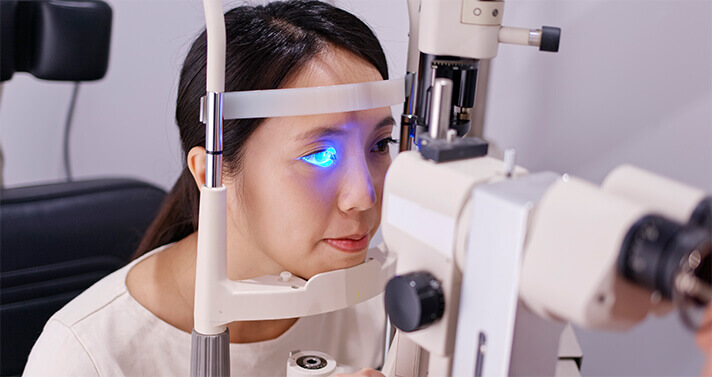

WIADOMOŚĆ TYGODNIA: CO PROWADZI DO SZYBKIEJ UTRATY WZROKU U WIĘKSZOŚCI LUDZI PO 40. ROKU ŻYCIA? KTO MOŻE URATOWAĆ LUDZI PRZED CAŁKOWITĄ ŚLEPOTĄ?
Niezwykły student z Polski otrzymuje najwyższe nagrody medyczne za odkrycie nowej formy przywracania wzroku, która może być stosowana u pacjentów w każdym wieku
Latem 2019 roku na dorocznym Kongresie Okulistów w Poznaniu wydarzyło się coś niesamowitego. Całe grono zebranych nagrodziło 10-minutowym żarliwym aplauzem osobę wygłaszającą swoje przemówienie. Tą osobą jest Jan Igonko, student medycyny z Poznania. Przedstawił on projekt wykorzystania unikalnego preparatu przywracającego wzrok, który pozwala na prewencję całkowitej ślepoty.
Jan zaproponował genialny pomysł realizowany przez jednych z najlepszych analityków medycznych w kraju. W tym ekspertów z Kolegium Okulistyki i innych placówek badawczych w zakresie rozwoju medycyny. Jak dotąd, nowy preparat wykazuje doskonałe wyniki.
W dzisiejszym raporcie postaramy się dowiedzieć, jak może on uratować miliony istnień i jak Polacy mogą go zdobyć z DUŻYM rabatem.
dziennikarz: "Jan, jesteś jednym z dziesięciu najinteligentniejszych studentów medycyny na świecie. Jaki jest powód, dla którego skupiasz się na problemie przywracania wzroku?".
Naprawdę nie chcę o tym mówić. Moja motywacja jest tutaj osobista. Kilka lat temu moja matka zaczęła doświadczać ciągłego pogarszania się wzroku. Okulary i soczewki kontaktowe nie pomagały. Jej wzrok nadal się pogarszał. Miała zaplanowaną operację oczu, ale na tydzień przed operacją okazało się, że przyczyną pogarszającego się widzenia był słaby dopływ krwi do soczewki i dna oka, więc operacja została wstrzymana.
Z powodu tego stanu moja babcia całkowicie straciła wzrok. Wtedy zacząłem studiować zagadnienia związane z zaburzeniami widzenia. Ze zdziwieniem uświadomiłem sobie, że większość leków sprzedawanych w aptekach jest bezużyteczna i szkodliwa. W rzeczywistości leki te tylko pogarszają stan zdrowia. Moja mama stosuje je na co dzień.
Przez ostatnie trzy lata byłem w pełni pochłonięty tym tematem. Tak naprawdę to właśnie podczas pisania pracy magisterskiej odkryłam nową metodę leczenia wzroku, o której mówiono. Wiem, że to nowość. Ale nie sądziłem, że wywoła tak duże zainteresowanie w środowisku medycznym i biznesowym.
dziennikarz: "Co dokładnie ma Pan na myśli?"
Gdy tylko ukazał się artykuł o mojej metodzie, natychmiast zacząłem dostawać oferty od inwestorów, którzy chcieli kupić mój pomysł. Najpierw zgłosiła się do mnie francuska firma, która zaoferowała mi 120 000 euro. Ostatnim, który się do mnie zgłosił, była amerykańska firma zarządzająca aptekami. Chcą kupić mój pomysł za 35 milionów dolarów. Zmieniłem numer telefonu i unikałem mediów społecznościowych, ponieważ otrzymałem mnóstwo propozycji z każdego miejsca, aby tylko ze mną porozmawiać.
dziennikarz: "Z tego co wiem, nie sprzedał pan receptury"
To prawda. Zabrzmi to trochę nieelegancko, ale nie zrobiłem tego po to, żeby jacyś bogacze mieszkający za granicą byli jeszcze bogatsi. W końcu co się stanie, jeśli sprzedam recepturę za granicę? Opatentują formułę i zabronią innym produkować ten lek. I wtedy podniosą cenę. Może jestem młody, ale nie jestem głupi. W tej sytuacji zwykłych ludzi po prostu nie będzie na to stać. Jeden z zagranicznych lekarzy powiedział mi, że ta receptura powinna kosztować co najmniej 300 000 . To nieracjonalne. Kto może to kupić za trzysta tysięcy zł?".
Kiedy więc otrzymałem propozycję od eksperta ds. badań, aby opracować terapię na lokalny rynek, chętnie się zgodziłem. Współpracowałem z Kolegium Okulistycznym. To było wspaniałe doświadczenie. Teraz badania kliniczne są już zakończone i każdy może kupić kurację.
Projekt był realizowany z pomocą profesora Bolesława Bogaja, okulisty z prywatnego centrum medycznego w Poznaniu. Poprosiliśmy go, aby opowiedział nam o nowej kuracji.
dziennikarz: "Jakie znaczenie ma pomysł Jana Igonko? Czy rzeczywiście pomaga on całkowicie przywrócić wzrok niezależnie od wieku?".
Pomysł Jana to nowe podejście do leczenia chorób oczu, w tym także dziedzicznych. Dla ekspertów nie jest tajemnicą, że wszystkie leki w aptece pomagają jedynie w początkowych stadiach choroby. Co więcej, pozbawieni skrupułów lekarze są przyzwyczajeni do praktyki przepisywania pacjentowi określonych leków, które tylko opóźniają to, czego nie da się powstrzymać. A kiedy chory jest już niemal całkowicie ślepy, zostaje natychmiast zoperowany.
To jest dla nich po prostu biznes. Tak naprawdę nie chcą wyleczyć swoich pacjentów.
Na początku 2000 roku naukowcy z Poznania odkryli, że 90% problemów ze wzrokiem występuje z powodu niewystarczającego dopływu krwi do gałek ocznych. W rezultacie soczewka, twardówka i rogówka nie otrzymują wymaganej ilości niezbędnych składników odżywczych. A jeśli przyczyna zostanie usunięta, w większości przypadków można uniknąć operacji. 
Pomysł Jana pomaga poprawić dopływ krwi do aparatu wzrokowego człowieka. Dzięki temu można uniknąć ryzyka utraty wzroku w początkowych stadiach choroby. Ale z pewnością nie wystarcza to do wyleczenia cięższych stadiów, kiedy pacjent jest prawie ślepy. Wysiłki wielu lekarzy i specjalistów medycznych skupiają się na stworzeniu skutecznej terapii przywracającej wzrok bez względu na wiek, opartej na proponowanej formule.
dziennikarz: "Ale czy nie uważa się, że przywrócenie wzroku bez operacji jest niemożliwe, zwłaszcza jeśli przekroczyło się 40 lat?".
To wszystko nie ma sensu. Dowodzi chęci zarobienia pieniędzy przez firmy farmaceutyczne. Już dawno udowodniono, że każdy układ organizmu może się sam odbudować. Trzeba tylko trochę pomóc, łagodząc stany zapalne, poprawiając ukrwienie, przyspieszając usuwanie martwych komórek i toksyn.
dziennikarz: "Ale jak dotychczas leczono choroby oczu? W aptekach można znaleźć wiele leków na oczy."
Dokładnie, jest wiele takich leków. Ale wszystkie one opierają się na zasadzie, którą opisałem na samym początku tej rozmowy. Leki te mogą jedynie łagodzić objawy - to wszystko, co potrafią. Pacjenci doświadczają jedynie chwilowej ulgi. Jednak takie leki częściej negatywnie wpływają na stan wzroku niż go przywracają. Jan ma tu rzeczywiście rację. Jeśli spojrzysz na składy leków sprzedawanych w aptekach, każdy specjalista powie ci, że powinny być one stosowane tylko w ostateczności.
dziennikarz: "Jaka jest różnica między nimi a Pana kuracją? Czy pomaga ona całkowicie przywrócić zdrowe widzenie?"
Różnica polega na tym, że moja kuracja pomaga wyhodować nową tkankę i przywrócić dopływ krwi do oka. Nawet jedno użycie wystarczy, aby aktywować ponad 930 000 komórek bezpośrednio zaangażowanych w proces odbudowy wzroku. I dzieje się to za każdym razem, gdy stosujesz kurację. To jest podstawowa zasada tej metody.
Like Junjun, we tried to address the issue of restoring sight from a fresh perspective. his treatment is actually more than just a combination of chemical formulas used in many other drugs. It is a unique combination of high concentration plant extracts. This makes it the most effective and safest method of treatment of all existing methods.
Dosłownie w ciągu 1-2 dni od rozpoczęcia leczenia, Twój wzrok zacznie się
poprawiać. Twój wzrok staje się klarowny, poprawia się ostrość widzenia, a zaczerwienienie i
uczucie gorąca zostają wyeliminowane. Następnie twoje komórki są odbudowywane i wzrok wraca do
normy nawet w najpoważniejszych przypadkach. W przeciwieństwie do chemicznych leków z aptek, nie
ma negatywnych skutków ubocznych stosowania w układzie naczyniowym oka. 
dziennikarz: "Ale czy waszą kurację można kupić również w aptekach? I jak wysoki będzie to koszt?"
Zapewne wiesz, że gdy tylko stało się jasne, że faktycznie robimy coś sensownego, firmy farmaceutyczne bardo chciały się z nami skontaktować. Chcą, aby Jan sprzedał im recepturę. Ale nie planują wytworzenia produktu. Wręcz przeciwnie, chcą ograniczyć masową produkcję kuracji. Leczenie chorób oczu jest największą gałęzią rynku farmaceutycznego. W samych Stanach Zjednoczonych sprzedawane są leki o wartości miliardów dolarów. Nasze leczenie radykalnie zmieni sytuację na rynku. Przecież nikt nie chce wydawać pieniędzy na leki poprzedniej generacji czy poddawać się laserowej korekcie wzroku, skoro może raz na zawsze przejść kurację i na zawsze zapomnieć o problemach ze wzrokiem, niezależnie od wieku.
Grupy aptekarskie są partnerami firm farmaceutycznych. Ściśle ze sobą współpracują. I oczywiście są uzależnione od sprzedaży leków. Nie pozwolą więc na wprowadzenie naszej kuracji, nawet jeśli jest to jedyna kuracja, która jest oficjalnie zalecana w leczeniu chorób oczu i w zapobieganiu powikłaniom, takim jak całkowita ślepota.
dziennikarz: "Gdzie ludzie mogą kupić waszą kurację, skoro nie jest dostępna w aptekach?
We decided to distribute the medicine ourselves, without the involvement of any pharmacy. We are currently selling Directly to our customers. We do not use any intermediaries such as commercial pharmacies. We discussed the various options and focused on the most effective. If you want to get at a good discount, fill out the form on the supplier's website. Our operators will contact you to answer your questions and confirm the order details. Your order will then be shipped. There is a supplier website where you can place your order at a discount. Almost everyone has Internet access now. Even if a person does not have a computer, they probably still have a smartphone with Internet access. You need to hurry before the offer ends.
If you order in advance, you will get with 50% DISCOUNT. This promotional campaign is designed to arouse people's interest in the treatment. We hope to use the "word of mouth" effect because we believe people will start recommending it to their friends and family.
dziennikarz: "Ale jaka jest cena regularna?"
Koszt produkcji to około za pakiet. Jednak obecnie oferujemy duże zniżki, więc będzie to cenowo dostępne dla każdego. Zniżka wynosi nawet do 50%. Na szczęście producenci leków rozumieją, jak ważne jest, aby produkt był dostępny dla całej populacji kraju, a nie tylko kilku jednostek. Obiecujemy, że nie będziemy sprzedawać receptury za granicę i nie będziemy eksportować samego produktu i będziemy sprzedawać go tylko w Polsce.
Dostałem tę kurację specjalną. W piątym dniu mojej kuracji, mogłem widzieć lepiej i już nie ma rozmytego obrazu. Po raz pierwszy od 15 lat nie noszę okularów! To świetne uczucie móc widzieć wyraźnie!
Zamówiłem ze zniżką, dla mojej mamy. Przyszło wczoraj. Musiałem odebrać na poczcie. To łatwiejsze niż chodzenie do okulisty. Już zaczęła stosować.
Te dzieci są takie mądre! Powodzenia w realizacji tego projektu!
Przeczytałam o tej kuracji w gazecie medycznej. Napisał ją znany lekarz...
Dostałam ten preparat 10 dni temu. W przyszłym miesiącu powinnam poddać się operacji. Nigdy nie myślałam, że to mi pomoże. Mam jaskrę. Kiedy wczoraj poszłam do okulisty, nie mógł uwierzyć w to, co widzi: mój wzrok wrócił do normy. Zapytał mnie, jakiego leku używam i powiedziałam mu o tym . Powiedział, że nigdy o nim nie słyszał, bo gdyby tak, to przepisałby mi go zamiast zalecać operację! Jednakże nie wierzę mu. Zamówiłam produkt wcześniej, bo był przeceniony i bałam się, że po operacji oślepnę...
Zamówiłam go dla mojej mamy i taty, ponieważ nie chciałam przegapić zniżki. Oboje są teraz w trakcie kuracji i z każdym dniem czują się lepiej. Przestali nosić szkła w domu, co jest dużym sukcesem.
Udało mi się zamówić ten produkt po obniżonej cenie! Zostanie wysłany jutro, miejmy nadzieję.
Ja również to zamówiłam. Nie mogę się doczekać, aż dotrze!
To naprawdę boli, jak się jest traktowanym w prywatnych klinikach. Minęło sporo czasu odkąd ostatni raz tam byłam. Oni cię tam niszczą. Jestem bardzo wdzięczna za możliwość otrzymania z tak dużą zniżką.
Czytam te wszystkie recenzje i dochodzę do wniosku, że i ja muszę to mieć :-) Zamawiam teraz.
To co robią ci ludzie jest niesamowite. Dziękuję za wasze wysiłki, aby był on dostępny dla wszystkich ludzi.
To jest naprawdę niesamowite! Miałem kataraktę zaledwie w zeszłym tygodniu, ale teraz już jej nie ma. Mój wzrok nie jest jeszcze całkowicie wyleczony, mimo że nie zakończyłam jeszcze kuracji.